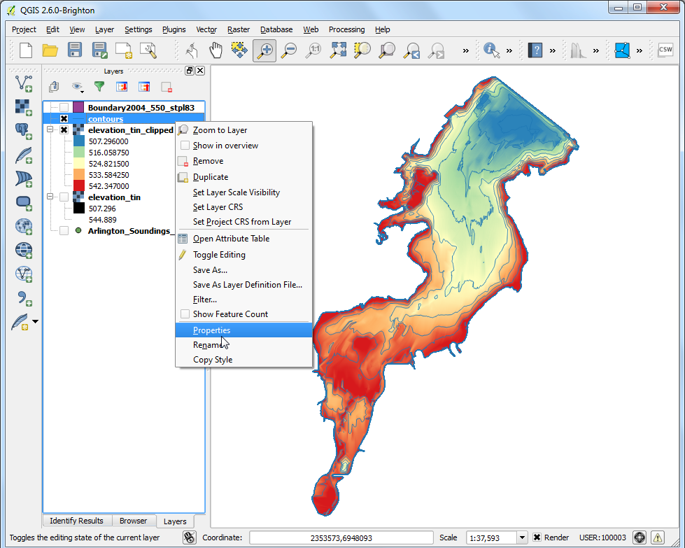

Інтерполяція точкових даних
Інтерполяція часто використовується GIS для створення суцільної поверхні із дискретного набору точок. Більшість реальних об’єктів є безперервними - височини, грунти, температури і т. д.. Якщо ми хочемо змоделювати такі поверхні для подальшого аналізу, не можливо здійснити вимірювання по всій поверхні. Таким чином, вимірювання проводяться в різних точках вздовж поверхні а проміжні значення отримуються за допомогою розрахунку, який називається ‘інтерполяція’. В QGIS, інтерполяцію можна здійснити за допомогою вбудованого Плагіну Інтерполяції.
Огляд завдання
Ми проведемо вимірювання глибин озера Арлінгтон в Техасі і створимо карту рельєфу і контурів з цих вимірювань.
Додаткові навички
Створення контурів із точкових даних.
Встановлювати значення без даних для шару.
Додавання позначок до векторних значень.
Виконання
Запустіть QGIS і перейдіть у меню .

Перейдіть до завантаженого файлу Shapefiles.zip і виберіть його. Натисніть кнопку OK.

В діалоговому вікні Select layers to add..., затисніть клавішу Shift і виберіть шари Arlington_Soundings_2007_stpl83.shp і Boundary2004_550_stpl83.shp. Натисніть OK.

Ви побачите 3 завантажені шари в QGIS. Шар Boundary2004_550_stpl83 являє собою межі озера. Зніміть галочку поруч із ним в Змісті.

Ми покажемо дані із другого шару Arlington_Soundings_2007_stpl83. Хоча дані виглядають як лінії, насправді це набір дуже близько розташованих точок.

Натисніть кнопку Zoom і виберіть невелику область на екрані. Якщо ви збільшите зображення ви побачите точки. Кожна точка представляє собою заміри зроблені за допомогою Ехолоту у координатах, що були записані обладнанням DGPS.

Виберіть інструмент Identify і натисніть на точку. Ви побачите відкриту панель Identify Results зліва із значенням атрибуту точки. В даному випадку, атрибут ELEVATION містить глибину озера в заданій позиції. Оскільки нашою задачею є створення профілю глибини і контурів рельєфу, ми використаємо ці значення на вхід процедури інтерполяції.

Переконайтеся, що Плагін Інтерполяції ввімкнено. Дивіться Використання додатків, щоб дізнатися як включати плагіни. Якщо плагін ввімкнено, перейдіть до меню .

В діалоговому вікні Інтерполяція виберіть Arlington_Soundings_2007_stpl83 в якості Vector layers на панелі Input. Виберіть ELEVATION в якості:guilabel:Interpolation attribute. Натисніть Add. Введіть значення 5 в полях Cellsize X і Cellsize Y. Це значення задає розмір кожного пікселю в вихідній сітці. Оскільки ваші дані спроектовані в системі CRS із одиницями виміру Feet-US, на основі вашого вибору, розмір сітки буде 5 футів. Натисніть кнопку ... поруч із Output file і назвіть вихідний файл elevation_tin.tif. Натисніть OK.
Примітка
Результат інтерполяції може значно відрізнятися залежно від методу і параметрів, які ви виберете. Інтерполяція в QGIS підтримує методи: Триангульована нерегулярна мережа (TIN) і Інверсне зваження відстаней (IDW). TIN метод зазвичай використовується для даних рельєфу, в той час як метод IDW використовується для інтерполяції інших типів даних таких як концентрації мінералів, населення і ін.. Дивіться модуль Просторовий аналіз документації QGIS для більш детальної інформації.

Ви побачите новий шар elevation_tin завантажений в QGIS. Натисніть правою кнопкою миші на шар і виберіть Zoom to layer.

Тепер ви побачите створену поверхню у повному обсязі. Інтерполяція не дає точного результату за межами області зібраних даних. Давайте обріжемо вихідну поверхню по межі краю озера. Перейдіть в меню .

Назвіть Вихідний файл як elevation_tin_clipped.tif`. Виберіть значення Cliiped mode як Mask layer. Виберіть Boundary2004_550_stpl83 як Mask layer`. Натисніть OK.

Новий растр elevation_tin_clipped буде завантажено в QGIS. Тепер ми стилізуємо цей шар аби показати зміну висот. Зверніть увагу на значення мінімальної і максимальної висоти для шару elevation_tin. Натисніть праву кнопку миші на шарі elevation_tin_clipped і виберіть Properties.

Перейдіть до вкладки Стиль. Виберіть Render type як Singleband pseudocolor. На панелі Generate new color map виберіть Спектральний спад кольору. Оскільки ми хочемо створити карту глибин, що є протилежним до карти висот, виберіть пункт Інвертувати. Це задасть сині кольори для глибоких частин і червоні для мілких ділянок. Натисніть Классифікувати.

Перейдіть до вкладки Прозорість. Ми хочемо усунути чорні пікселі із нашого результату. Введіть 0 у поле Additional no data value. Натисніть OK.

Тепер ви маєте карту рельєфу озера, створену із окремих вимірювань глибини. Давайте тепер створимо контури. Перейдіть у меню .

У діалоговому вікні Contour, введіть contours у поле Output file for contour lines. Ми побудуємо контурні лінії із інтервалом в 5 футів, тому введіть 5.00 в якості Interval between contour lines. Перевірте поле Attribute name. Натисніть OK.

Контурні лінії будуть завантажені на шар contours після завершення обробки. Натисніть правою кнопкою миші на шар і виберіть Properties.

Перейдіть на вкладку Labels tab. Виберіть пункт Label this layer with і виберіть в якості поля - ELEV. Виберіть Curved в якості типу Placement і натисніть OK.

Ви побачите, що кожна контурна лінія має відповідні позначки із висотою вздовж лінії.